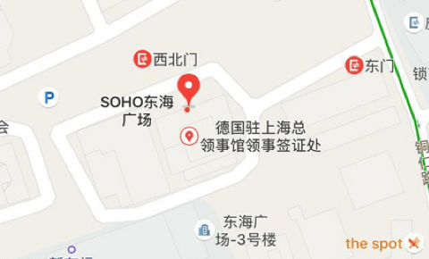
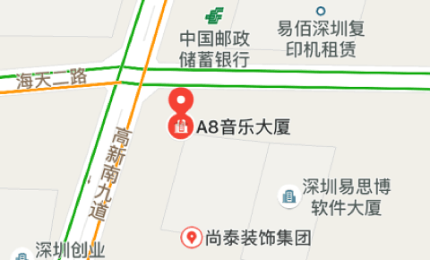

为什么选择青松基金？
青松基金由刘晓松、董占斌、苏蔚三位互联网及投资界资深人士于2012年6月创办、是一家主要致力于早期投资的风险投资机构。基金旗下共管理三期人民币基金，总值约13亿元人民币。截至2016年12月，青松基金已投资了95家公司。
青松基金的创始合伙人均为经验丰富的企业家或投资人。在组建青松基金之前，他们或创立公司并将其发展壮大，或在顶尖的互联网、金融机构中担任高管多年。青松的合伙人有平均15年的投资经验，到2016年12月，合伙人累计投资项目近130个，涉及投资金额约达47亿人民币。经验丰富的基金管理团队长期活跃在北京、深圳、上海等中国产业创新的前沿地带。
在已经投资的企业中，青松独家投资和领投比例达98%；也因为“从立项到打款,最快时间为一周”的超常规效率，备受投资企业赞誉。我们的目标是，充分利用合伙人在资本市场的经验以及广泛的人脉关系，为不同行业、不同阶段的企业提供支持，包括协助投资团队和被投企业进行各类资本市场活动。
青松基金的创始合伙人均为经验丰富的企业家或投资人。在组建青松基金之前，他们或创立公司并将其发展壮大，或在顶尖的互联网、金融机构中担任高管多年。青松的合伙人有平均15年的投资经验，到2016年12月，合伙人累计投资项目近130个，涉及投资金额约达47亿人民币。经验丰富的基金管理团队长期活跃在北京、深圳、上海等中国产业创新的前沿地带。
在已经投资的企业中，青松独家投资和领投比例达98%；也因为“从立项到打款,最快时间为一周”的超常规效率，备受投资企业赞誉。我们的目标是，充分利用合伙人在资本市场的经验以及广泛的人脉关系，为不同行业、不同阶段的企业提供支持，包括协助投资团队和被投企业进行各类资本市场活动。
我们寻找什么样的创业公司
在已经投资的企业中，青松独家投资和领投比例达98%；也因为“从立项到打款，最快时间为一周”的超常规效率，备受投资企业赞誉。我们的目标是，充分利用合伙人在资本市场的经验以及广泛的人脉关系，为不通行业、不同阶段的企业提供支持，包括协助投资团队喝被投企业进行各类资本市场活动。
联系我们
Email:qingsong@qingsongfund.com

上海市静安区南京西路1486号SOHO东海广场3902室

深圳市南山区科技园科园路1002号A8音乐大厦23楼